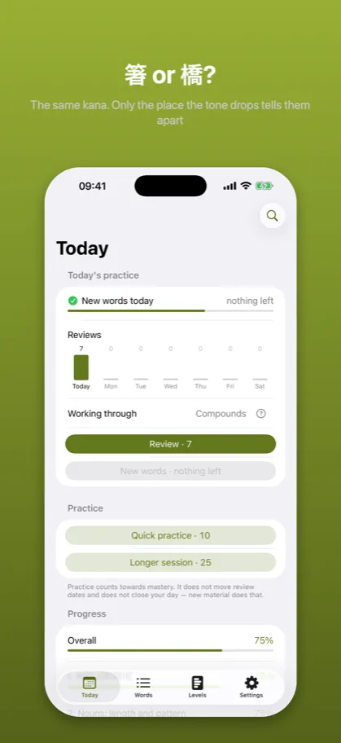
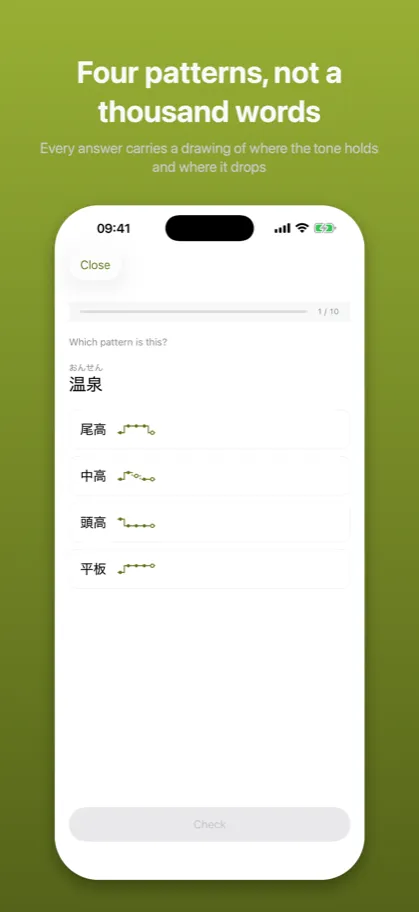
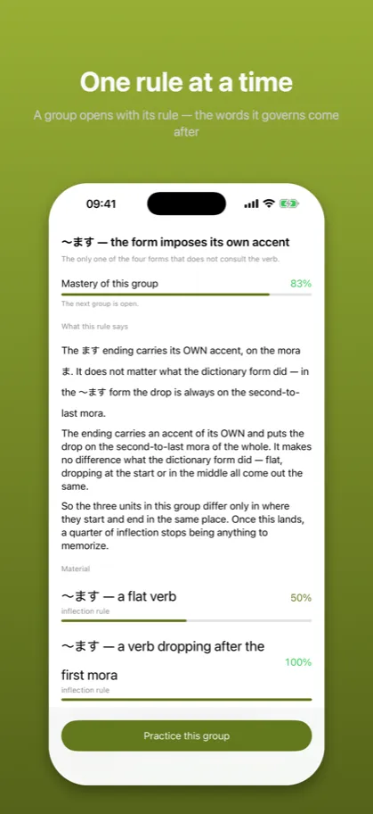
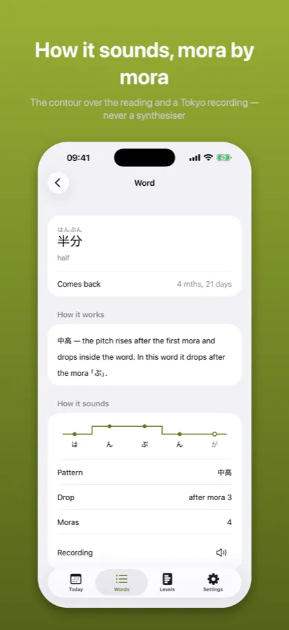
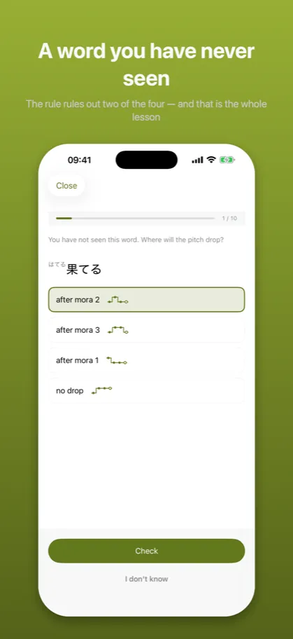

Kifuku: Japanese Pitch Accent起伏
Pronunciation and listening
App Store →iOSFree app with an in-app purchase
Learn Japanese pitch accent. Compare patterns, practice inflection, and train your ear with recordings. Five levels, offline learning.
What it looks like


The same kana. Only the place the tone drops tells them apart


Every answer carries a drawing of where the tone holds and where it drops


A group opens with its rule — the words it governs come after


The contour over the reading and a Tokyo recording — never a synthesiser


Test a rule on a separate word pool, with matches and exceptions
Description from the store
Learn Japanese pitch accent. Kifuku teaches patterns, rules, and accent changes during inflection, and helps you recognize pitch drops by ear.
Practice four skills and track each separately:
• Rules — practice applying them to words from a separate pool of examples.
• Patterns — recognize 平板, 頭高, 中高, and 尾高.
• Inflection — follow accent changes in forms such as 〜ます, 〜た, 〜ない, and 〜て.
• Listening — locate the pitch drop in a recording.
Rule exercises use a pool of examples that also includes exceptions. After answering, you learn the accent of that word. Rules help you notice patterns, but learning the accent of individual words still matters.
Mora diagrams show the pitch contour. Rule cards explain the patterns and show their coverage, so you can see where a rule applies and where exceptions begin. Learn new material in small groups, with an explanation before the first question.
Five levels cover the four patterns, nouns, verbs and い-adjectives, inflection, and compounds. The material follows the Tokyo standard; accents in other regions can differ.
Spaced reviews bring words back on a schedule. Mistakes return within the same session. Progress stays on your device, and you can export a backup.
The schedule shows review items for seven days or the next 48 hours. Open its list to see names and times. Add, edit, or delete your own memory aids on entry cards; they are included in backups. A Home Screen widget shows reviews, and its large size also shows progress in your other Japanese-learning apps.
Learning works offline, without an account, ads, or AI. Recordings are included in the app; missing audio is clearly marked. Purchases and restoring purchases require a connection to Apple's store.
Levels 1 and 2 are fully free. One purchase unlocks levels 3–5. No subscription.
Accent data: UniDic (NINJAL). Recordings: Tofugu and WaniKani. Sources and licenses are listed in Settings.
The description above is the same text that stands on the App Store product page – it comes from the same file.
App Store →iOSFree app with an in-app purchase
Common questions
What does Kifuku teach?
Learn Japanese pitch accent. Kifuku teaches patterns, rules, and accent changes during inflection, and helps you recognize pitch drops by ear.
Practice four skills and track each separately:
• Rules — practice applying them to words from a separate pool of examples.
• Patterns — recognize 平板, 頭高, 中高, and 尾高.
• Inflection — follow accent changes in forms such as 〜ます, 〜た, 〜ない, and 〜て.
• Listening — locate the pitch drop in a recording.
Documents
The other apps
- Kaname: Japanese Grammar — JLPT practice: N5 N4 N3 N2 N1
- Bunmyaku: Japanese Reading — Vocabulary, kanji, furigana
- Katsuyokei: Conjugation — Verbs, adjectives and drills
- Joshi: Japanese Particles — Grammar drills for the JLPT
- Kazoekata: Japanese Counters — Counting, kanji and drills
- Kuzushi: Casual Japanese — Anime, drama and slang
- Shindan: Japanese Level Test — JLPT placement: N5 N4 N3 N2 N1
- Keigo: Polite Japanese — Formal Japanese for work
- Onomatope: Japanese Mimetics — Manga and anime vocabulary